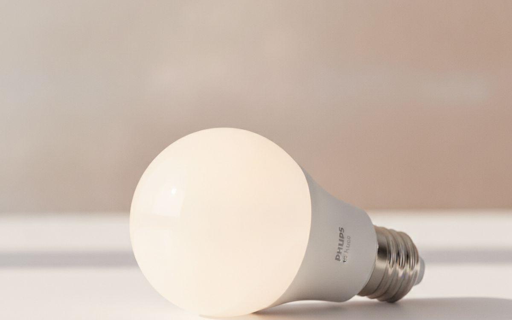
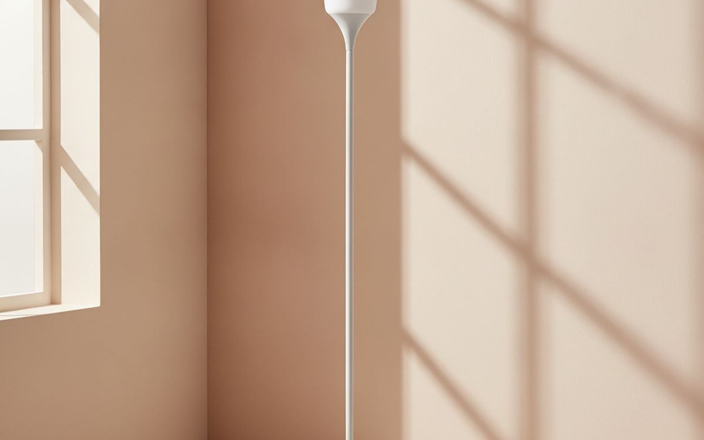
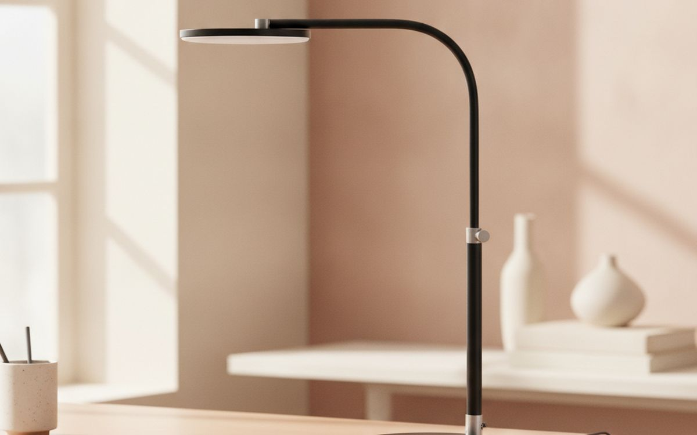
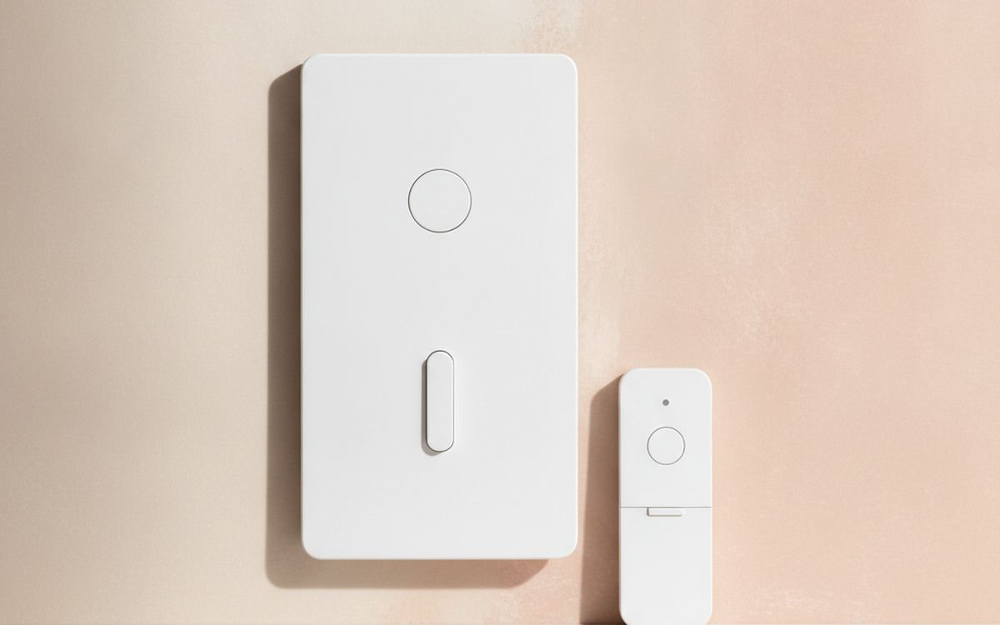
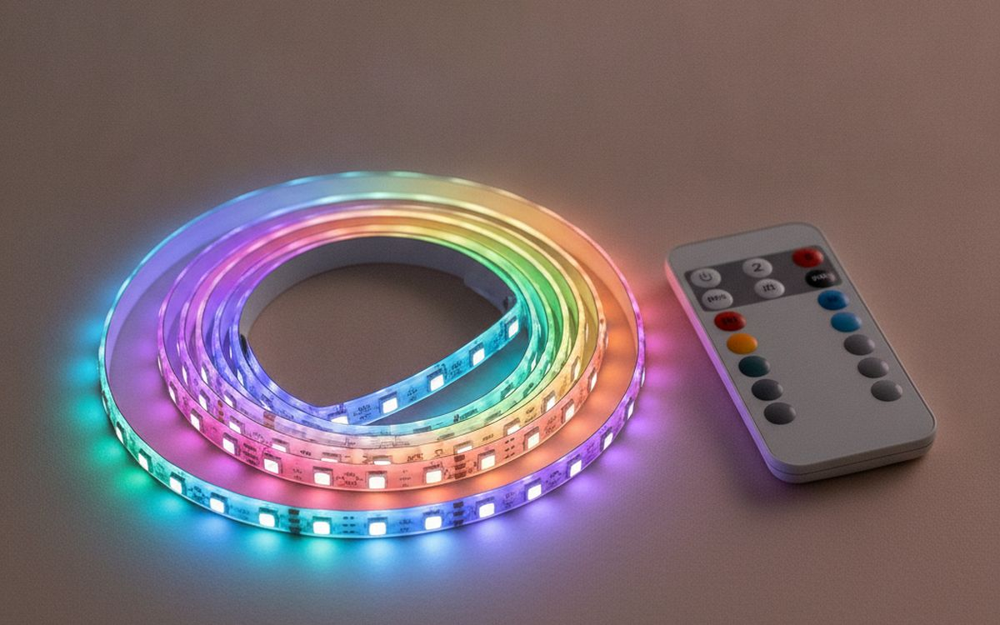
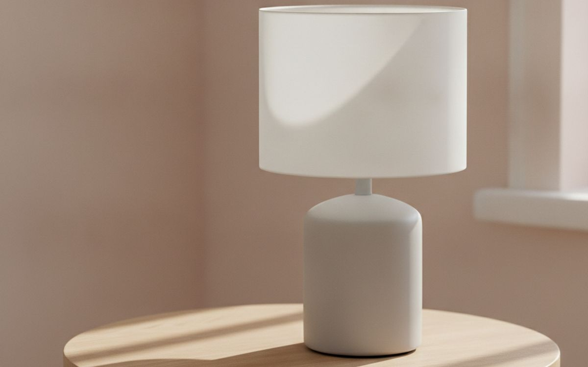
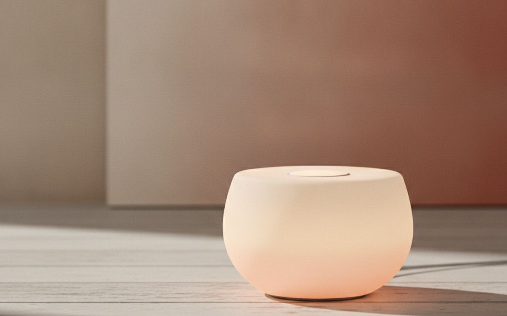
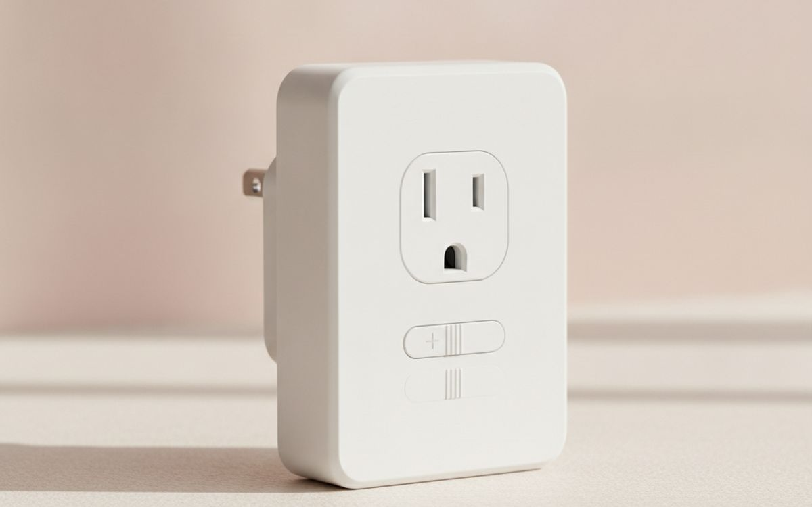
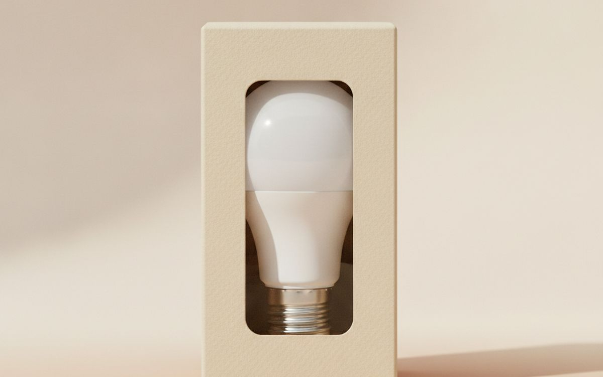
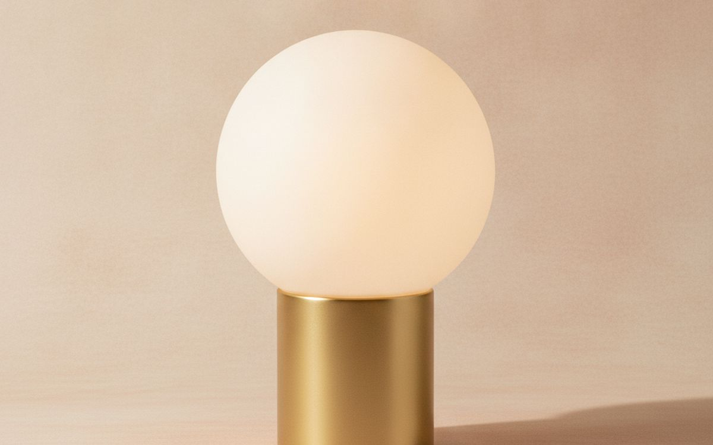

תאורה טובה משנה חלל יותר מצבע. מצאנו מנורות ונורות שעובדות, בלי לגרום לחדר שלכם להרגיש כמו חדר המתנה סטרילי.
חדרים שכורים רבים, במיוחד ישנים, מגיעים עם תאורת תקרה אחת, קשה. התצורה הזו פונקציונלית לראייה, אבל היא בקושי גורמת לחלל להרגיש מזמין. היא מטילה צללים חזקים ומשאירה פינות חשוכות, ויוצרת אווירה קרובה יותר למתקן מוסדי מאשר לבית. הסתמכות בלעדית על גוף תאורה תקרה היא טעות התאורה הנפוצה ביותר, והיא מכתיבה באופן יסודי כמה נוח אתם מרגישים בחדר.
המלכוד הוא לחשוב שיותר אור תמיד עדיף, או שנורה אחת, חזקה, תפתור את הבעיה. לעתים קרובות, זה רק מחמיר את הבעיה. טעות נוספת היא קניית נורות או מנורות זולות, לא ניתנות לעמעום, שדוחפות אור ישר החוצה, ויוצרות סנוור. תאורה טובה היא עניין של שכבות, לא רק בהירות. היא משתמשת במקורות מרובים ליצירת עומק, ביטול צללים קשים, והגדרת אזורים שונים בתוך חדר, אפילו קטן.
גילוי נאות. הקישורים בעמוד הזה הם קישורי שותפים. אם תקנו דרכם אנחנו עשויים להרוויח עמלה, בלי תוספת עלות לכם. זה לא משפיע על מה שנכנס לרשימה או על הסדר שלו.
איך בחרנו
בחרנו את המוצרים האלה על סמך המוניטין הציבורי שלהם לאמינות, קלות שימוש ויעילות בתרחישי תאורה נפוצים. מדריך זה מבוסס על מפרטי מוצר וחוויות משתמש זמינים באופן נרחב, לא על בדיקות מעשיות. מטרתנו היא לזהות פתרונות תאורה שמתמודדים עם בעיות ספציפיות, מציעים ערך טוב ביחס לעלותם, ויש להם שימושיות אמיתית עבור אלה המנסים לשפר את מרחבי המחיה שלהם מבלי להוציא יותר מדי או להסתבך יתר על המידה.
השוואה מהירה
המחירים הם הערכה נכון לזמן הכתיבה ומשתנים לעיתים קרובות.
הבחירות

1
האור הלבן המתכוונןPhilips Hue White Ambiance A19
$20-30
נורת חכמה זו מציעה מגוון של אור לבן, מ-2200K חם מאוד (כמו נורה ליבון) ועד 6500K קריר ובהיר (כמו אור יום). יכולת כוונון זו חיונית לחדר שכור. ניתן להשתמש בגוונים חמים יותר בערב להרגעה ואור קריר ובהיר יותר למשימות או כשצריך ריכוז. היא מתחברת בקלות לגשר Hue או ישירות באמצעות Bluetooth, ומציעה שליטה מיידית מהטלפון. היכולת לשנות את טמפרטורת הצבע יכולה לשנות באופן דרמטי את מצב הרוח של החדר, ולהפוך אותו לגמיש לאורך כל היום. היא גם מעומעמת בצורה חלקה ללא הבהוב, עם מה שנורות חכמות זולות רבות נאבקות בו.
בעד
- ספקטרום אור לבן מתכוונן
- עמעום חלק, ללא הבהוב
- קישוריות חכמה אמינה
נגד
- דורש גשר Hue לתכונות מלאות
- יקר יותר מנורות חכמות בסיסיות

2
אור סביבה עקיףIKEA NOT Floor Uplighter
$10-15
מנורת רצפה בסיסית זו היא דרך פשוטה להכניס אור סביבה לחדר ללא סנוור ישיר. היא מחזירה אור מהתקרה, ויוצרת תאורה רכה ואחידה שממלאת את החלל. גישה זו נמנעת מהצללים הקשים האופייניים לגופי תאורה תקרה. למרות פשטותה, היא משפרת משמעותית את הבהירות והנוחות הכללית של החדר, במיוחד חדר עם תאורת תקרה אחת. היא מקבלת נורת E26 רגילה, כך שניתן להחליף בקלות לנורת LED חכמה ניתנת לעמעום לשליטה רבה יותר. היא זולה וקלה להרכבה, מה שהופך אותה לאופציה עם מחויבות נמוכה לשוכרים.
בעד
- מספקת אור סביבה רך ועקיף
- זול מאוד
- קל להרכבה
נגד
- מבנה פלסטיק מרגיש זול
- משיכה אסתטית מינימלית

3
לעבודה ממוקדת ונוחהBenQ e-Reading Desk Lamp
$150-200
מנורת BenQ e-Reading מיועדת לעבודה ממוקדת, במיוחד על מסכים. היא כוללת פס אור רחב ומעוקל שמפזר אור באופן אחיד על פני שטח גדול יותר ממנורות שולחן טיפוסיות, ומפחית סנוור על מסכים. יש לה גם חיישן חכם שמתאים את הבהירות לאור הסביבה, ומונע עייפות עיניים. טמפרטורת הצבע ניתנת לכוונון, ומאפשרת לך להתאים למסך או להעדפה שלך. מדד עיבוד הצבע הגבוה שלה (CRI) פירושו שצבעים נראים מדויקים יותר. מנורה זו אינה מיועדת לתאורת חדר סביבתית; היא מנורת משימה ייעודית לעבודה רצינית או קריאה, המשפרת את הנוחות בשעות ארוכות.
בעד
- פיזור אור רחב ואחיד לשולחנות
- התאמת בהירות אוטומטית
- מדד עיבוד צבע גבוה
נגד
- יקר למנורת שולחן
- לא מיועד לתאורת חדר כללית

4
שליטה חכמה לגופי תאורה קיימיםLutron Caséta Wireless Smart Lighting Dimmer Switch
$50-70
מתג עמעום חכם זה מחליף את מתג הקיר הקיים שלך, ומאפשר שליטה אלחוטית ועמעום של נורות התקרה הרגילות שלך או גופי תאורה קבועים אחרים. הוא עובד עם רוב נורות ה-LED, CFL, ליבון והלוגן הניתנות לעמעום, מה שהופך אותו לשדרוג ורסטילי. בניגוד לנורות חכמות, הוא הופך כל נורה תואמת לחכמה, מה שיכול להיות חסכוני יותר עבור חדרים עם מספר גופים. ההתקנה דורשת ידע חשמלי בסיסי, אך היא הופכת תאורת תקרה קשה למקור גמיש. הוא זקוק לגשר נפרד לשילוב מלא בבית חכם, אך יכול לעבוד עם שלט Pico ישירות.
בעד
- מעמעם נורות טיפשות קיימות באמינות
- חסכוני עבור גופים מרובים
- משתלב עם מערכות בית חכם רבות
נגד
- דורש התקנה חשמלית מסוימת
- נדרש גשר לגישה מרחוק מלאה

5
תאורת הדגשה ואווירהGovee RGBIC LED Strip Lights
$30-50
פסי לד אלה מצוינים להוספת תאורת הדגשה עקיפה לחדר. ניתן למקם אותם מאחורי טלוויזיה, מתחת למדפים, לאורך פנלים, או מתחת למיטה כדי ליצור זוהר שמגדיר חלל ומוסיף חום. טכנולוגיית RGBIC מאפשרת לחלקים שונים של הפס להציג צבעים שונים בו זמנית, ומאפשרת אפקטים דינמיים ומעניינים יותר מפסי RGB פשוטים יותר. הם נשלטים באמצעות אפליקציה ומציעים מגוון רחב של צבעים וסצנות. אמנם הם לא יאירו חדר שלם, אך הם משלימים תאורת סביבה ומשימה היטב, וגורמים לחלל שכור להרגיש מודרני ומותאם אישית יותר.
בעד
- אפקטי רב-צבע דינמיים
- קל להתקנה כתאורת הדגשה
- שליטה באפליקציה עם הגדרות קבועות רבות
נגד
- לא מתאים כמקור אור עיקרי
- דבק עלול לפגוע במשטחים צבועים

6
אור רך ומקומיGeneric Table Lamp with Fabric Shade
$25-50
מנורת שולחן טובה עם אהיל בד חיונית ליצירת מאגרי אור רכים ומקומיים. בניגוד לנורות חשופות או מפזרי פלסטיק, אהיל בד מפזר אור בעדינות, מפחית סנוור ויוצר זוהר חם ומזמין. הניחו אחת על שולחן צדדי ליד ספה או על שידת לילה לקריאה. סוג מנורה זה מוסיף מקור אור בקנה מידה אנושי, ומונע מהחדר להרגיש עצום וריק. בחרו אחת עם גוון אהיל ניטרלי כדי למנוע גוון לא רצוי של האור. צמדו אותה לנורה ניתנת לעמעום לגמישות מקסימלית בבהירות.
בעד
- יוצר מאגרי אור רכים ומזמינים
- מפחית סנוור ביעילות
- מוסיף חום ויזואלי לחדר
נגד
- עלול לצבור אבק על האהיל
- תפוקת אור מוגבלת לאזורים גדולים

7
אור גמיש היכן שצריךPhilips Hue Go Portable Table Lamp
$80-100
ה-Hue Go היא מנורה ניידת ונטענת המציעה אור לבן וגם צבעוני. היתרון העיקרי שלה הוא גמישות; ניתן להעביר אותה לכל מקום בחדר ללא צורך בשקע, ליצירת תאורת הדגשה זמנית או נקודת מוקד. היא יכולה לפעול מספר שעות על סוללה, מה שהופך אותה שימושית לערבים בפטיו או פשוט להעברת אור לפינה חשוכה ללא חיווט. למרות שהיא חלק ממערכת Hue, היא מציעה גם פקדים בסיסיים ישירות על היחידה. היא לא מיועדת להאיר חדר שלם, אלא להוסיף זוהר ספציפי, נשלט, היכן שמנורה קבועה לא יכולה להגיע.
בעד
- ניידת ונטענת לחלוטין
- ספקטרום צבע מלא ולבן
- ניתן לשליטה ללא גשר
נגד
- חיי סוללה קצרים יחסית בבהירות מלאה
- תפוקת אור מוגבלת ביחס למחירה

8
שליטה חכמה לכל מנורה מחוברת לחשמלLutron Caséta Smart Plug Dimmer
$40-60
עבור מנורות שפשוט מתחברות לשקע קיר, דימר תקע חכם זה מוסיף יכולות שליטה ועמעום אלחוטיות מיידיות. זוהי דרך קלה להפוך כל מנורת שולחן או מנורת רצפה רגילה ל'חכמה' מבלי להחליף את הנורה או החיווט. זה שימושי במיוחד בחללים שכורים שבהם שינוי גופים או חיווט אינו מותר. הוא תומך בנורות LED, CFL, ליבון והלוגן הניתנות לעמעום, מה שהופך אותו לרב-תכליתי מאוד. כמו מוצרי Caséta אחרים, הוא דורש את Lutron Smart Bridge לשילוב מלא בבית חכם ושליטה באפליקציה, אך ניתן לזווג אותו ישירות עם שלט Pico.
בעד
- מוסיף עמעום מיידי לכל מנורה מחוברת לחשמל
- אין צורך בחיווט או החלפת נורות
- שליטה אלחוטית אמינה
נגד
- דורש גשר Lutron לשליטה באפליקציה
- תופס שקע קיר אחד

9
נורת LED בסיסית, איכותית, לבנה חמה וניתנת לעמעוםGE Relax HD Soft White Dimmable A19 LED Bulb
$5-10
לפעמים, נורה חכמה היא סיבוך מיותר. נורת GE Relax HD זו מציעה טמפרטורת צבע חמה ומזמינה של 2700K, דומה לנורות ליבון מסורתיות, אידיאלית ליצירת אווירה נוחה. ייעוד 'HD' שלה פירושו שיש לה מדד עיבוד צבע (CRI) גבוה יותר מנורות LED בסיסיות רבות, מה שגורם לצבעים בחדר שלכם להיראות חיים ומדויקים יותר. באופן מכריע, היא מעומעמת בצורה חלקה מאוד עם מתגי עמעום סטנדרטיים, ונמנעת מהבהוב או קפיצות פתאומיות הנפוצות בנורות LED זולות יותר. זוהי בחירה מוצקה, ללא תוספות, לתאורה כללית שבה אתם פשוט צריכים אור עקבי ונעים.
בעד
- טמפרטורת צבע חמה ומזמינה של 2700K
- מדד עיבוד צבע גבוה (CRI)
- מעומעמת בצורה חלקה עם דימרים סטנדרטיים
נגד
- לא נורה חכמה
- טמפרטורת צבע קבועה אחת בלבד

10
אור סביבה מפוזר ופיסוליIKEA FADO Table Lamp
$20-30
מנורת IKEA FADO היא מנורת זכוכית כדורית פשוטה המספקת אור סביבה מפוזר ורך מאוד. עיצובה הופך אותה יותר לפסל תאורה מאשר מנורת משימה מסורתית. גלובוס הזכוכית החלבי מבטיח שאין סנוור ישיר, ומפזר אור באופן אחיד לכל הכיוונים סביב המנורה. היא מצוינת להוספת זוהר עדין לפינה או כפריט דקורטיבי על מדף, ותורמת לשכבות התאורה הכללית בחדר. היא מקבלת נורת E12 רגילה, המאפשרת לכם לבחור LED לבן חם או אפילו נורה חכמה קטנה לשליטה נוספת. היא מספקת אווירה ולא תאורה.
בעד
- יוצרת אור סביבה רך ואומני-כיווני
- עיצוב מינימליסטי אטרקטיבי
- אין סנוור ישיר מהנורה
נגד
- מספקת מעט מאוד תאורה ישירה
- גלובוס הזכוכית עלול להיות שביר
שאלות נפוצות
מהי "טמפרטורת צבע" ולמה זה צריך לעניין אותי?
טמפרטורת צבע, הנמדדת בקלווין (K), מתארת את החום או הקרירות הנתפסים של אור לבן. מספרים נמוכים יותר בקלווין, כמו 2700K, מייצרים אור צהבהב חם הדומה לנורת ליבון, שלעתים קרובות מועדף לחללים מרגיעים כמו סלונים וחדרי שינה. מספרים גבוהים יותר, כמו 5000K או 6500K, קרים וכחולים יותר, דומים לאור יום או לתאורת פלורסנט משרדית, ומתאימים יותר למשימות הדורשות עירנות. הבנה זו עוזרת לכם לבחור נורות שמתאימות למצב הרוח ולפונקציה הרצויה של כל אזור בחדר שלכם, ומונעת תחושה קרה ולא מזמינה.
האם כדאי לי לקנות נורות חכמות לכל האורות שלי?
כנראה שלא לכל אור. בעוד שנורות חכמות מציעות נוחות וגמישות, החלפת כל נורה בביתכם בגרסה חכמה יכולה להיות יקרה במהירות. עבור תאורת משימה או אזורים שבהם אתם פשוט צריכים אור עקבי ואיכותי, נורת LED רגילה ניתנת לעמעום עם CRI גבוה מספיקה לרוב וזולה הרבה יותר. נורות חכמות בעלות הערך הרב ביותר הן באזורי מגורים, חדרי שינה, או היכן שתרצו להתאים טמפרטורת צבע, לוחות זמנים לעמעום, או ליצור סצנות ספציפיות. תעדפו היכן תכונות חכמות מוסיפות ערך אמיתי, במקום פשוט להחליף כל נורה.
איך אני יכול לגרום לחדר השכור שלי להרגיש יותר מזמין עם תאורה?
המפתח הוא שכבות תאורה והימנעות מהסתמכות בלעדית על גופי תקרה. התחילו בכיבוי תאורת התקרה הקשה אם אפשר. הציגו מקורות אור מרובים, נמוכים יותר כמו מנורות שולחן ומנורות רצפה. השתמשו בנורות עם טמפרטורת צבע חמה (סביב 2700K-3000K) כדי ליצור זוהר מזמין. מקמו מנורות כדי להאיר פינות, קירות, או אמנות, ולא רק להאיר ישר למטה. דימרים גם חיוניים; הם מאפשרים לכם להתאים את הבהירות לפי זמן היום או מצב הרוח שלכם, והופכים חלל קודר למקלט נוח.
האם אני צריך "גשר בית חכם" מיוחד לנורות חכמות?
זה תלוי בנורות החכמות הספציפיות ובפונקציונליות הרצויה שלכם. נורות חכמות חדשות רבות, במיוחד אלו המשתמשות ב-Bluetooth, ניתנות לשליטה ישירות מאפליקציית הטלפון שלכם ללא גשר נפרד. זה נוח עבור נורה בודדת או מערך קטן. עם זאת, לשילוב בכל הבית, תזמון אמין, גישה מרחוק כשאתם לא נמצאים, או חיבור לעוזרות קוליות כמו Alexa או Google Assistant, גשר ייעודי (כמו Philips Hue Bridge או Lutron Smart Bridge) נדרש לעתים קרובות. גשרים מספקים טווח טוב יותר, יציבות, ופותחים תכונות מתקדמות עבור מערכים גדולים יותר.
← כל המדריכים
הגשנו בקשה להצטרף לתוכנית השותפים של אמזון. איננו שותפים של אמזון עדיין, ואיננו מרוויחים דבר מקישורים לאמזון בשלב זה. כשותפים של עליאקספרס אנחנו מרוויחים עמלה מרכישות מזכות. המחירים והזמינות נכונים לזמן הפרסום ועשויים להשתנות.